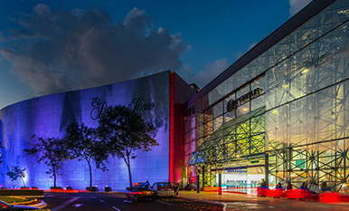

Blog de Ciudades
Las galerías de ciudades, también conocidas como galerías urbanas o galerías de arte urbano, son espacios públicos o privados dedicados a la exhibición y promoción del arte contemporáneo en entornos urbanos.
ofrecen una plataforma para artistas locales, nacionales e internacionales para mostrar su trabajo al público en general. Pueden presentar una variedad de formas de arte, incluyendo pintura, escultura, arte callejero, instalaciones, fotografía, entre otros.
